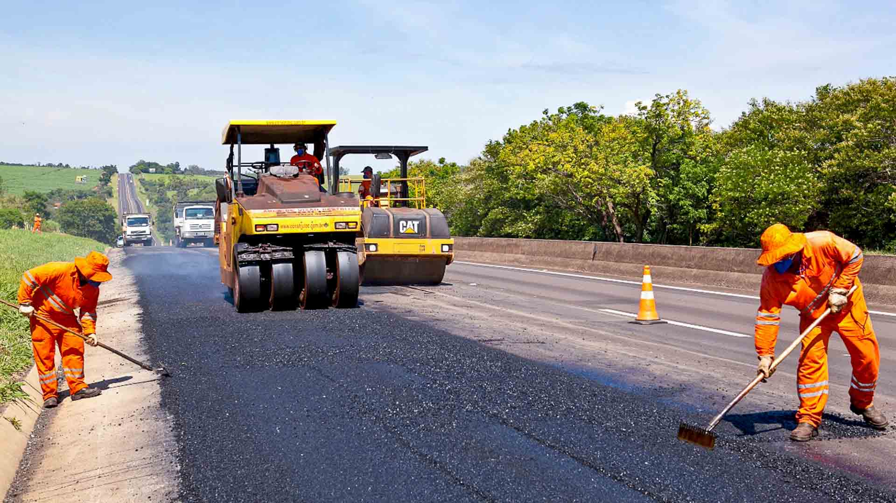
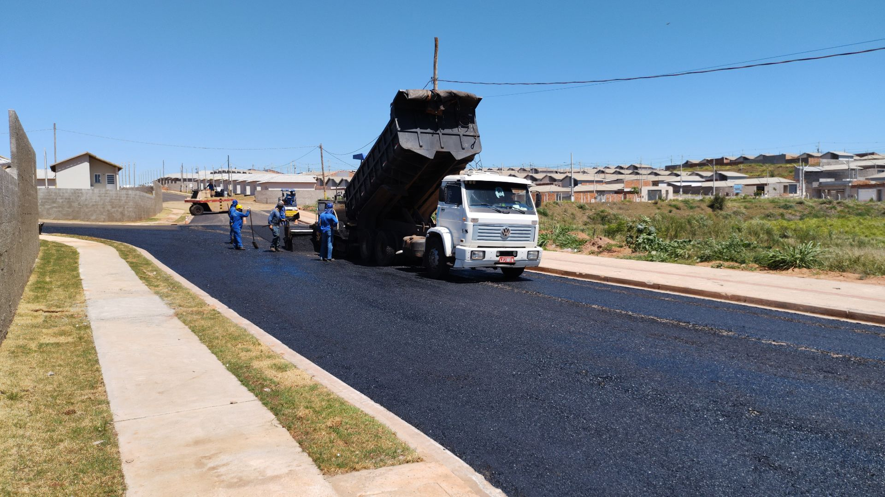

Sobre mim
Me chamo Gabriel, sou engenheiro civil, atuando no setor de pavimentação asfáltica, onde aplico minha experiência técnica em projetos e execução de obras que impactam diretamente na mobilidade e infraestrutura. Meu dia a dia consiste em trabalhos de campo, como levantamentos em pista, conferência de serviços, e acompanhamento do andamento da obra, mas também na parte de escritório, como programação e planejamento de serviços, elaboração de relatórios, entre outros.
 Tenho como principal hobbie jogar no computador, onde me divirto muito com meus amigos. Inclusive foi através
dos jogos que aprimorei meu inglês e hoje consigo me cumincar muito bem com ele. Os jogos fizeram parte de
toda minha infância, desde quando ganhei meu primeiro vídeo-game e computador desktop. Meus estilos de jogos
preferidos são FPS e MMORPG.
Ainda falando de jogos, não apenas jogos digitais me encantam, como também jogos de tabuleiros e cartas,
como banco imobiliário, coup, imagem & ação, truco e poker, sendo poker meu jogo "de azar" favorito.
Também gosto muito de ver filmes e séries em dias que não estou tão animado para jogar ou quando meus amigos
não estão online.
Meu esporte preferido é vôlei de praia. Algumas vezes na semana combinamos entre amigos de jogar para se
divertir, se exercitar e mexer um pouco o
esqueleto. Meu segundo esporte preferido é o tênis de mesa, famoso ping pong, mas esse jogo com bem menos
frequência.
Quando sobra tempo no final de semana, também costumo ler algumas páginas de alguns livros sobre tecnologia,
matérias, notícias e vídeos para ficar antenado.


Esse interesse que sempre tive por tecnologia me motivou a iniciar uma nova graduação em Engenharia de Software, buscando unir minha formação em engenharia com a área de desenvolvimento e inovação tecnológica, buscando futuramente uma migração total para a área de programação. Dois principais motivos que me fizeram querer mudar de área é pela flexibilidade de trabalho (HomeOffice) e possibilidade de trabalhar em empresas fora do Brasil.